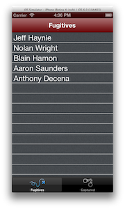

Lab - Alloy Models
Mission: Your goal is to become familiar with Alloy Models as a way to represent, access, and manipulate the data of your app.
Specification: In this lab, you will extend a partially-completed app. The UI has been created for you. Now you need to add the data.
To successfully complete this lab, you must develop an application that meets the following description:
- You will define a Model named fugitives, saved to a SQLite database, with these fields: name (string), captured (integer), url (string), capturedLat (real), capturedLong (real). You'll specify 0 as the default value for captured while leaving the remaining fields with an empty default value.
- You will instantiate a collection in both the Fugitives.js and Captured.js controllers.
- In both the Fugitives.xml and Captured.xml views, you will bind the Fugitives collection to the table.
- In the root controller, you will initialize the collection if the 'seeded' property has not been set. You will save models for each of the names provided in the starting file to the collection.
| 1. Download the starting code for this lab from S3: 06_Models and unzip the files. Import the project into Titanium Studio. Update the tiapp.xml, if necessary (e.g. to set an appropriate SDK version or build target for your environment). | |
| 2. Create a new model in a file named Fugitives.js. (Hint: Right-click the models directory and choose New, Alloy Model.) Define the columns and default values as described in the specifications section above. Name your collection fugitives and set its adapter type to sql. | |
| 3. In both the Fugitives and Captured controllers, instantiate a collection object as described by the code comments in those files. | |
| 4. Update both the Fugitives and Captured views to create references to the collection. Update the table tags to reference your data collection also. | |
| 5. Update the root controller (index.js) as described in the code comments within that file. You will initialize your collection by looping through an array to create and save a series of models to that collection. | |
| 6. Save all the files. Build your app for the iOS simulator or Android emulator. Correct any problems that exist. | |
| Your finished app should match the screen shot above. Because we haven't added any data filtering to the app, the same list of people will be listed on both the Fugitives and Captured tabs. Your instructor will demonstrate the alloy_fugitive project (or see the Resources below to explore this on your own) which implements filtering and handles user interaction events. | |
Summary
In this lab, you extended the supplied example app and backed its views with data by implementing models and collections.
Resources
- Guides: Models http://docs.appcelerator.com/titanium/latest/#!/guide/Alloy_Models
- Aaron Saunder's alloy_fugitive project https://github.com/aaronksaunders/alloy_fugitive
- Finished code for this lab: S3: 06_models (finished)